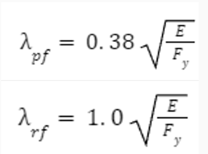
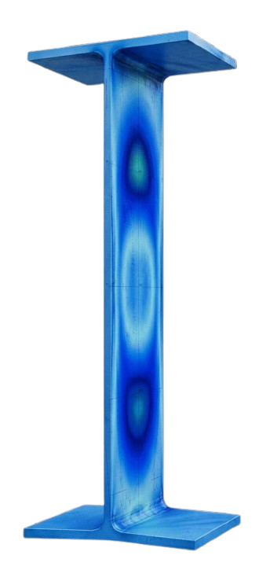
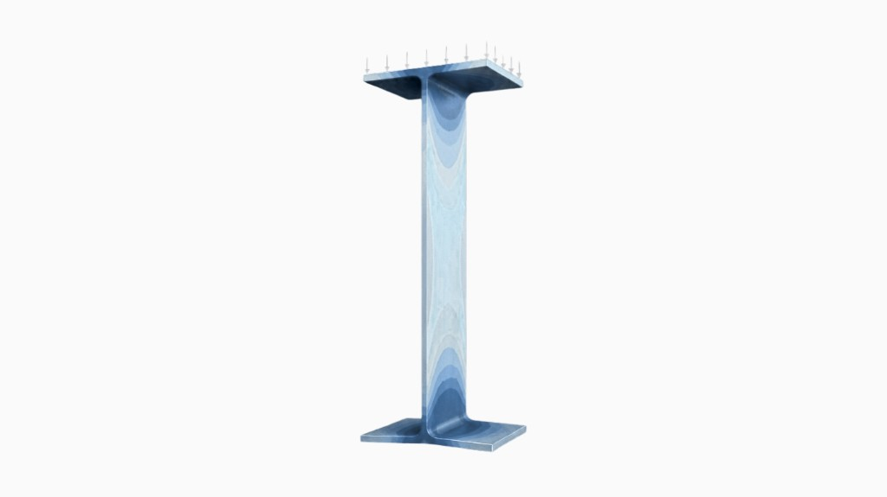

<div class="sf-comp sf-comp--bending">
  <div class="sf-comp__modeNav" role="tablist" aria-label="Bending calculator type">
    <button class="sf-comp__modeBtn active" type="button" data-comp-mode="analysis" role="tab" aria-selected="true">
      ANALYSIS BENDING
    </button>
    <button class="sf-comp__modeBtn" type="button" data-comp-mode="design" role="tab" aria-selected="false">
      DESIGN BENDING
    </button>
    <div class="sf-bendTopTabs" aria-label="Deflection options">
      <input type="radio" name="sfBendDeflect" id="sfBendDefNo" class="sf-tensGate" checked />
      <input type="radio" name="sfBendDeflect" id="sfBendDefYes" class="sf-tensGate" />
      <label class="sf-comp__modeBtn sf-bendTopTabs__btn" for="sfBendDefNo">WITHOUT DEFLECTION</label>
      <label class="sf-comp__modeBtn sf-bendTopTabs__btn" for="sfBendDefYes">WITH DEFLECTION</label>
    </div>
  </div>

  <!-- ANALYSIS -->
  <div class="sf-comp__mode is-active" data-comp-mode-pane="analysis" role="tabpanel" aria-label="Analysis bending">
    <div class="sf-comp__card" role="region">
      <div class="sf-comp__star" aria-hidden="true">★</div>

      <!-- Analysis bending — ref. client screen ~26: left parameters + blue pills; right stacked compactness + capacity -->
      <div class="sf-tbRef__bendShell">
        <section class="sf-tbRef__card sf-tbRef__bendLeft" aria-label="Parameters">
          <div class="sf-tbRef__methodRow">
            <span class="sf-tbRef__pillLbl">ANALYSIS METHOD</span>
            <div class="sf-tbRef__methodPick">
              <select class="sf-tbRef__methodSel sf-tbRef__methodSel--lg sf-tbRef__methodSel--rect" id="sfBendAnaMethod" aria-label="Analysis method">
                <option value="lrfd">LRFD</option>
                <option value="asd" selected>ASD</option>
              </select>
              <span class="sf-tbRef__caret" aria-hidden="true">▾</span>
            </div>
          </div>

          <div class="sf-tbRef__paramsHdr">PARAMETERS</div>

          <div class="sf-tbRef__row sf-tbRef__row--select">
            <span class="sf-tbRef__lab">AISC MANUAL SELECTION</span>
            <select class="sf-tbRef__sel sf-tbRef__sel--rect" id="sfBendAnaAisc" aria-label="AISC manual selection">
              <option value="w" selected>W-Shape</option>
              <option value="manual">Manual entry</option>
            </select>
          </div>

          <div class="sf-tbRef__propsGrid sf-tbRef__propsGrid--bend">
            <label class="sf-tbRef__kv"><span>λ<sub>f</sub> =</span><input class="sf-tbRef__pillIce sf-tbRef__pillIce--pill" id="sfBendAnaLf" inputmode="decimal" /><span class="sf-tbRef__u"></span></label>
            <label class="sf-tbRef__kv"><span>λ<sub>w</sub> =</span><input class="sf-tbRef__pillIce sf-tbRef__pillIce--pill" id="sfBendAnaLw" inputmode="decimal" /><span class="sf-tbRef__u"></span></label>
            <label class="sf-tbRef__kv"><span>Z<sub>x</sub> =</span><input class="sf-tbRef__pillIce sf-tbRef__pillIce--rect" id="sfBendAnaZx" inputmode="decimal" /><span class="sf-tbRef__u">in³</span></label>
            <label class="sf-tbRef__kv"><span>S<sub>x</sub> =</span><input class="sf-tbRef__pillIce sf-tbRef__pillIce--rect" id="sfBendAnaSx" inputmode="decimal" /><span class="sf-tbRef__u">in³</span></label>
          </div>

          <div class="sf-tbRef__row sf-tbRef__row--select">
            <span class="sf-tbRef__lab">STEEL GRADE</span>
            <input class="sf-tbRef__inp sf-tbRef__inp--rect" id="sfBendAnaSteel" type="text" autocomplete="off" />
          </div>

          <div class="sf-tbRef__propsGrid sf-tbRef__propsGrid--3">
            <label class="sf-tbRef__kv"><span>F<sub>y</sub> =</span><input class="sf-tbRef__pillIce sf-tbRef__pillIce--rect" id="sfBendAnaFy" inputmode="decimal" /><span class="sf-tbRef__u">ksi</span></label>
            <label class="sf-tbRef__kv"><span>E =</span><input class="sf-tbRef__pillIce sf-tbRef__pillIce--rect" id="sfBendAnaE" inputmode="decimal" /><span class="sf-tbRef__u">ksi</span></label>
            <label class="sf-tbRef__kv"><span>M<sub>p</sub> =</span><input class="sf-tbRef__pillIce sf-tbRef__pillIce--rect" id="sfBendAnaMp" inputmode="decimal" /><span class="sf-tbRef__u">kips·ft</span></label>
          </div>

          <div class="sf-tbRef__legacyHooks" aria-hidden="true">
            <span id="sfBendAnaLambdaF"></span><span id="sfBendAnaLambdaW"></span>
          </div>
        </section>

        <div class="sf-tbRef__bendRight">
          <section class="sf-tbRef__card sf-tbRef__bendCompact" aria-label="Check compactness">
            <div class="sf-tbRef__paramsHdr">CHECK COMPACTNESS</div>

            <div class="sf-tbRef__bendCompactTop">
              <div class="sf-tbRef__bendCompactFormulas">
                <div class="sf-tbRef__formulaBlock">
                  
                  <span class="sf-tbRef__outIce sf-tbRef__outIce--sm" id="sfBendAnaLpfLim"></span>
                </div>
                <div class="sf-tbRef__formulaBlock">
                  
                  <span class="sf-tbRef__outIce sf-tbRef__outIce--sm" id="sfBendAnaLrfLim"></span>
                </div>
              </div>
              <div class="sf-tbRef__verdictBox">
                <span class="sf-tbRef__verdictLbl">VERDICT</span>
                <span class="sf-tbRef__verdictPill" id="sfBendAnaClass"></span>
              </div>
            </div>

            <div class="sf-tbRef__mnRow">
              <span class="sf-tbRef__mnLbl">NOMINAL MOMENT STRENGTH <span class="sf-tbRef__mnSym">M<sub>n</sub> =</span></span>
              <span class="sf-tbRef__outYellow sf-tbRef__mnVal" id="sfBendAnaMn"></span>
              <span class="sf-tbRef__u">kips·ft</span>
            </div>
          </section>

          <section class="sf-tbRef__card sf-tbRef__bendCap" aria-label="Bending capacity">
            <div class="sf-tbRef__paramsHdr">BENDING CAPACITY</div>
            <div class="sf-tbRef__capHero">
              <span class="sf-tbRef__capHeroSym">M<sub>a</sub> =</span>
              <span class="sf-tbRef__capHeroOval" id="sfBendAnaMa"></span>
              <span class="sf-tbRef__capHeroUnit">kips·ft</span>
            </div>
            <div class="sf-tbRef__capLrfdRow">
              <span class="sf-tbRef__capLrfdLbl">φM<sub>n</sub> (LRFD) =</span>
              <span class="sf-tbRef__outIce sf-tbRef__outIce--cap" id="sfBendAnaMu"></span>
              <span class="sf-tbRef__u">kips·ft</span>
            </div>
          </section>
        </div>
      </div>

      <div class="sf-comp__solveSlot">
        <button type="button" class="sf-comp__solve" id="sfBendAnaSolve">SOLVE</button>
      </div>
    </div>
  </div>

  <!-- DESIGN -->
  <div class="sf-comp__mode" data-comp-mode-pane="design" role="tabpanel" aria-label="Design bending">
    <div class="sf-comp__card" role="region">
      <div class="sf-comp__star" aria-hidden="true">★</div>

      <div class="sf-bendRef__designGrid">
        <div class="sf-bendRef__topRow">
        <section class="sf-tbRef__card sf-bendRef__card sf-bendRef__params" aria-label="Design parameters">
          <div class="sf-tbRef__methodRow">
            <span class="sf-tbRef__pillLbl">DESIGN METHOD</span>
            <div class="sf-tbRef__methodPick">
              <select class="sf-tbRef__methodSel sf-tbRef__methodSel--lg sf-tbRef__methodSel--rect" id="sfBendDesMethod" aria-label="Design method">
                <option value="lrfd" selected>LRFD</option>
                <option value="asd">ASD</option>
              </select>
              <span class="sf-tbRef__caret" aria-hidden="true">▾</span>
            </div>
          </div>

          <div class="sf-tbRef__paramsHdr">PARAMETERS</div>

          <div class="sf-bendDes__branch sf-bendDes__branch--noDefl">
            <div class="sf-tbRef__row sf-tbRef__row--select">
              <span class="sf-tbRef__lab">STEEL GRADE</span>
              <input class="sf-tbRef__inp sf-tbRef__inp--rect" id="sfBendDesSteelN" type="text" autocomplete="off" />
            </div>
            <label class="sf-tbRef__row sf-tbRef__row--tri"><span class="sf-tbRef__lab">DEAD LOAD =</span><input class="sf-tbRef__inp sf-tbRef__inp--rect" id="sfBendDesDlN" inputmode="decimal" autocomplete="off" /><span class="sf-tbRef__u">kips/ft</span></label>
            <label class="sf-tbRef__row sf-tbRef__row--tri"><span class="sf-tbRef__lab">LIVE LOAD =</span><input class="sf-tbRef__inp sf-tbRef__inp--rect" id="sfBendDesLlN" inputmode="decimal" autocomplete="off" /><span class="sf-tbRef__u">kips/ft</span></label>
            <label class="sf-tbRef__row sf-tbRef__row--tri"><span class="sf-tbRef__lab">LENGTH =</span><input class="sf-tbRef__inp sf-tbRef__inp--rect" id="sfBendDesLN" inputmode="decimal" autocomplete="off" /><span class="sf-tbRef__u">ft</span></label>
            <div class="sf-tbRef__row sf-tbRef__row--select">
              <span class="sf-tbRef__lab">BEAM TYPE</span>
              <select class="sf-tbRef__sel sf-tbRef__sel--rect" id="sfBendDesBeamN" aria-label="Beam type">
                <option value="" selected>Select beam type</option>
                <option value="fp-u">FIXED AND PIN — UDL</option>
                <option value="cont">CONTINUOUS — one span loaded</option>
              </select>
            </div>
          </div>

          <div class="sf-bendDes__branch sf-bendDes__branch--defl">
            <div class="sf-tbRef__row sf-tbRef__row--select">
              <span class="sf-tbRef__lab">STEEL GRADE</span>
              <input class="sf-tbRef__inp sf-tbRef__inp--rect" id="sfBendDesSteelY" type="text" autocomplete="off" />
            </div>
            <label class="sf-tbRef__row sf-tbRef__row--tri"><span class="sf-tbRef__lab">DEAD LOAD =</span><input class="sf-tbRef__inp sf-tbRef__inp--rect" id="sfBendDesDlY" inputmode="decimal" autocomplete="off" /><span class="sf-tbRef__u">kips/ft</span></label>
            <label class="sf-tbRef__row sf-tbRef__row--tri"><span class="sf-tbRef__lab">LIVE LOAD =</span><input class="sf-tbRef__inp sf-tbRef__inp--rect" id="sfBendDesLlY" inputmode="decimal" autocomplete="off" /><span class="sf-tbRef__u">kips/ft</span></label>
            <label class="sf-tbRef__row sf-tbRef__row--tri"><span class="sf-tbRef__lab">LENGTH =</span><input class="sf-tbRef__inp sf-tbRef__inp--rect" id="sfBendDesLY" inputmode="decimal" autocomplete="off" /><span class="sf-tbRef__u">ft</span></label>
            <label class="sf-tbRef__row sf-tbRef__row--tri"><span class="sf-tbRef__lab">DEFL. LIMIT</span><input class="sf-tbRef__inp sf-tbRef__inp--rect" id="sfBendDesDeflLim" inputmode="decimal" autocomplete="off" /><span class="sf-tbRef__u">in</span></label>
            <div class="sf-tbRef__row sf-tbRef__row--select">
              <span class="sf-tbRef__lab">BEAM TYPE</span>
              <select class="sf-tbRef__sel sf-tbRef__sel--rect" id="sfBendDesBeamY" aria-label="Beam type">
                <option value="" selected>Select beam type</option>
                <option value="fp-u">FIXED AND PIN — UDL</option>
                <option value="cont">CONTINUOUS — one span loaded</option>
              </select>
            </div>
          </div>
        </section>

        <section class="sf-tbRef__card sf-bendRef__card sf-bendRef__beamLoad" aria-label="Beam load">
          <div class="sf-tbRef__paramsHdr">BEAM LOAD:</div>
          <div class="sf-bendDes__branch sf-bendDes__branch--noDefl">
            <div class="sf-tbRef__row sf-tbRef__row--select">
              <span class="sf-tbRef__lab">BEAM TYPE</span>
              <span class="sf-tbRef__outIce sf-bendRef__chip">FIXED AND PIN - UDL</span>
            </div>
            <div class="sf-tbRef__reqLine"><span class="sf-tbRef__reqLbl">ULTIMATE MOMENT (M<sub>u</sub>) =</span><span class="sf-tbRef__outIce sf-bendRef__formulaChip">WL²/8</span><span class="sf-tbRef__u"> </span></div>
            <div class="sf-tbRef__reqLine"><span class="sf-tbRef__reqLbl">ULTIMATE DEFLECTION (Δ<sub>max</sub>) =</span><span class="sf-tbRef__outIce sf-bendRef__formulaChip">5WL⁴/384EI</span><span class="sf-tbRef__u"> </span></div>
          </div>
          <div class="sf-bendDes__branch sf-bendDes__branch--defl">
            <div class="sf-tbRef__row sf-tbRef__row--select">
              <span class="sf-tbRef__lab">BEAM TYPE</span>
              <span class="sf-tbRef__outIce sf-bendRef__chip">CONTINUOUS BEAM (2 EQUAL SPANS) - Uni</span>
            </div>
            <div class="sf-tbRef__reqLine"><span class="sf-tbRef__reqLbl">ULTIMATE MOMENT (M<sub>u</sub>) =</span><span class="sf-tbRef__outIce sf-bendRef__formulaChip">WL²/8</span><span class="sf-tbRef__u"> </span></div>
            <div class="sf-tbRef__reqLine"><span class="sf-tbRef__reqLbl">MAX DEFLECTION (Δ<sub>max</sub>) =</span><span class="sf-tbRef__outIce sf-bendRef__formulaChip">WL⁴/185EI</span><span class="sf-tbRef__u"> </span></div>
            <div class="sf-tbRef__reqLine"><span class="sf-tbRef__reqLbl">ALLOWABLE MOMENT OF INERTIA I<sub>x</sub> =</span><span class="sf-tbRef__outYellow sf-tbRef__outYellow--sm" id="sfBendDesIxReqChip">—</span><span class="sf-tbRef__u">in⁴</span></div>
          </div>
        </section>

        <section class="sf-tbRef__card sf-bendRef__card sf-bendRef__visuals" aria-label="Beam visuals">
          <div class="sf-bendRef__renders">
            
            
          </div>
        </section>
        </div>

        <div class="sf-bendRef__bottomRow">
        <div class="sf-bendRef__leftCol">
        <section class="sf-tbRef__card sf-bendRef__card sf-bendRef__loadWo" aria-label="Load without beam weight">
          <div class="sf-tbRef__paramsHdr">LOAD W/O BEAM WEIGHT</div>
          <div class="sf-bendDes__branch sf-bendDes__branch--noDefl">
            <div class="sf-tbRef__reqLine"><span class="sf-tbRef__reqLbl">1.2DL + 1.6LL =</span><span class="sf-tbRef__outIce" id="sfBendDesN_c12">—</span><span class="sf-tbRef__u">kips/ft</span></div>
            <div class="sf-tbRef__reqLine"><span class="sf-tbRef__reqLbl">1.4DL =</span><span class="sf-tbRef__outIce" id="sfBendDesN_c14">—</span><span class="sf-tbRef__u">kips/ft</span></div>
            <div class="sf-tbRef__reqLine"><span class="sf-tbRef__reqLbl">W<sub>u</sub> =</span><span class="sf-tbRef__outYellow sf-tbRef__outYellow--sm" id="sfBendDesN_Wu">—</span><span class="sf-tbRef__u">kips/ft</span></div>
            <div class="sf-tbRef__reqLine"><span class="sf-tbRef__reqLbl">ULTIMATE MOMENT (M<sub>u</sub>) =</span><span class="sf-tbRef__outIce" id="sfBendDesMuN"></span><span class="sf-tbRef__u">kips·ft</span></div>
            <div class="sf-tbRef__reqLine"><span class="sf-tbRef__reqLbl">DL+LL =</span><span class="sf-tbRef__outIce" id="sfBendDesN_dlll">—</span><span class="sf-tbRef__u">kips/ft</span></div>
            <div class="sf-tbRef__reqLine"><span class="sf-tbRef__reqLbl">W<sub>a</sub> =</span><span class="sf-tbRef__outYellow sf-tbRef__outYellow--sm" id="sfBendDesN_Wa">—</span><span class="sf-tbRef__u">kips/ft</span></div>
            <div class="sf-tbRef__reqLine"><span class="sf-tbRef__reqLbl">ALLOWABLE MOMENT (M<sub>a</sub>) =</span><span class="sf-tbRef__outIce" id="sfBendDesMaN"></span><span class="sf-tbRef__u">kips·ft</span></div>
            <div class="sf-tbRef__reqLine"><span class="sf-tbRef__reqLbl">ASSUMING COMPACTION FOR Z<sub>x</sub> =</span><span class="sf-tbRef__outIce" id="sfBendDesN_ZxReq">—</span><span class="sf-tbRef__u">in³</span></div>
          </div>
          <div class="sf-bendDes__branch sf-bendDes__branch--defl">
            <div class="sf-tbRef__reqLine"><span class="sf-tbRef__reqLbl">1.2DL + 1.6LL =</span><span class="sf-tbRef__outIce" id="sfBendDesY_c12">—</span><span class="sf-tbRef__u">kips/ft</span></div>
            <div class="sf-tbRef__reqLine"><span class="sf-tbRef__reqLbl">1.4DL =</span><span class="sf-tbRef__outIce" id="sfBendDesY_c14">—</span><span class="sf-tbRef__u">kips/ft</span></div>
            <div class="sf-tbRef__reqLine"><span class="sf-tbRef__reqLbl">W<sub>u</sub> =</span><span class="sf-tbRef__outYellow sf-tbRef__outYellow--sm" id="sfBendDesY_Wu">—</span><span class="sf-tbRef__u">kips/ft</span></div>
            <div class="sf-tbRef__reqLine"><span class="sf-tbRef__reqLbl">ULTIMATE MOMENT (M<sub>u</sub>) =</span><span class="sf-tbRef__outIce" id="sfBendDesMuY"></span><span class="sf-tbRef__u">kips·ft</span></div>
            <div class="sf-tbRef__reqLine"><span class="sf-tbRef__reqLbl">DL+LL =</span><span class="sf-tbRef__outIce" id="sfBendDesY_dlll">—</span><span class="sf-tbRef__u">kips/ft</span></div>
            <div class="sf-tbRef__reqLine"><span class="sf-tbRef__reqLbl">W<sub>a</sub> =</span><span class="sf-tbRef__outYellow sf-tbRef__outYellow--sm" id="sfBendDesY_Wa">—</span><span class="sf-tbRef__u">kips/ft</span></div>
            <div class="sf-tbRef__reqLine"><span class="sf-tbRef__reqLbl">ALLOWABLE MOMENT (M<sub>a</sub>) =</span><span class="sf-tbRef__outIce" id="sfBendDesMaY"></span><span class="sf-tbRef__u">kips·ft</span></div>
            <div class="sf-tbRef__reqLine"><span class="sf-tbRef__reqLbl">ASSUMING COMPACTION FOR Z<sub>x</sub> =</span><span class="sf-tbRef__outIce" id="sfBendDesY_ZxReq">—</span><span class="sf-tbRef__u">in³</span></div>
          </div>
        </section>

        <section class="sf-tbRef__card sf-bendRef__card sf-bendRef__loadW" aria-label="Load with beam weight">
          <div class="sf-tbRef__paramsHdr">LOAD WITH BEAM WEIGHT</div>
          <div class="sf-tbRef__reqLine"><span class="sf-tbRef__reqLbl">ULTIMATE WEIGHT W<sub>u</sub> =</span><span class="sf-tbRef__outIce" id="sfBendDesLwWu">—</span><span class="sf-tbRef__u">kips/ft</span></div>
          <div class="sf-tbRef__reqLine"><span class="sf-tbRef__reqLbl">ULTIMATE MOMENT M<sub>u</sub> =</span><span class="sf-tbRef__outIce" id="sfBendDesLwMu">—</span><span class="sf-tbRef__u">kips·ft</span></div>
          <div class="sf-tbRef__reqLine"><span class="sf-tbRef__reqLbl">ALLOWABLE WEIGHT W<sub>a</sub> =</span><span class="sf-tbRef__outIce" id="sfBendDesLwWa">—</span><span class="sf-tbRef__u">kips/ft</span></div>
          <div class="sf-tbRef__reqLine"><span class="sf-tbRef__reqLbl">ALLOWABLE MOMENT M<sub>a</sub> =</span><span class="sf-tbRef__outIce" id="sfBendDesLwMa">—</span><span class="sf-tbRef__u">kips·ft</span></div>
        </section>
        </div>

        <div class="sf-bendRef__rightCol">
        <section class="sf-tbRef__card sf-bendRef__card sf-bendRef__assumed1" aria-label="Assumed section primary">
          <div class="sf-bendDes__branch sf-bendDes__branch--noDefl">
            <div class="sf-tbRef__paramsHdr">ASSUMED SECTION</div>
          </div>
          <div class="sf-bendDes__branch sf-bendDes__branch--defl">
            <div class="sf-tbRef__paramsHdr">ASSUMED SECTION BY Z<sub>x</sub></div>
          </div>
          <div class="sf-tbRef__reqLine"><span class="sf-tbRef__reqLbl">STEEL SECTION =</span><span class="sf-tbRef__outYellow sf-tbRef__outYellow--sm" id="sfBendDesAss1Sec">—</span><span class="sf-tbRef__u"></span></div>
          <div class="sf-tbRef__reqLine"><span class="sf-tbRef__reqLbl">PLASTIC MODULUS Z<sub>x</sub> =</span><span class="sf-tbRef__outIce" id="sfBendDesZxY"></span><span class="sf-tbRef__u">in³</span></div>
          <div class="sf-tbRef__reqLine"><span class="sf-tbRef__reqLbl">WEIGHT W =</span><span class="sf-tbRef__outIce" id="sfBendDesAss1W">—</span><span class="sf-tbRef__u">lb/ft</span></div>
          <div class="sf-tbRef__reqLine"><span class="sf-tbRef__reqLbl">ELASTIC SECTION S<sub>x</sub> =</span><span class="sf-tbRef__outIce" id="sfBendDesAss1Sx">—</span><span class="sf-tbRef__u">in³</span></div>
          <div class="sf-tbRef__reqLine"><span class="sf-tbRef__reqLbl">λ<sub>f</sub> =</span><span class="sf-tbRef__outIce" id="sfBendDesAss1Lf">—</span><span class="sf-tbRef__u">-</span></div>
          <div class="sf-bendDes__branch sf-bendDes__branch--defl">
            <div class="sf-tbRef__reqLine"><span class="sf-tbRef__reqLbl">REMARKS =</span><span class="sf-tbRef__outYellow sf-tbRef__outYellow--sm" id="sfBendDesAss1Rm">—</span><span class="sf-tbRef__u"></span></div>
          </div>
        </section>

        <section class="sf-tbRef__card sf-bendRef__card sf-bendRef__compact" aria-label="Check compactness">
          <div class="sf-tbRef__paramsHdr">CHECK COMPACTNESS</div>
          <div class="sf-tbRef__reqLine"><span class="sf-tbRef__reqLbl">λ<sub>pf</sub> =</span><span class="sf-tbRef__outIce" id="sfBendDesLpf">—</span><span class="sf-tbRef__u"></span></div>
          <div class="sf-tbRef__reqLine"><span class="sf-tbRef__reqLbl">λ<sub>rf</sub> =</span><span class="sf-tbRef__outIce" id="sfBendDesLrf">—</span><span class="sf-tbRef__u"></span></div>
          <div class="sf-tbRef__row sf-tbRef__row--out">
            <span class="sf-tbRef__lab">VERDICT</span>
            <span class="sf-tbRef__outYellow sf-tbRef__outYellow--sm" id="sfBendDesVerdict">COMPACT FLANGE</span>
            <span class="sf-tbRef__u"></span>
          </div>
          <div class="sf-tbRef__reqLine"><span class="sf-tbRef__reqLbl">NOMINAL MOMENT STRENGTH M<sub>n</sub> =</span><span class="sf-tbRef__outYellow sf-tbRef__outYellow--sm" id="sfBendDesMn">—</span><span class="sf-tbRef__u">kips·ft</span></div>
        </section>

        <section class="sf-tbRef__card sf-bendRef__card sf-bendRef__defl" aria-label="Deflection checks">
          <div class="sf-tbRef__paramsHdr">DEFLECTION</div>
          <div class="sf-tbRef__reqLine"><span class="sf-tbRef__reqLbl">ALLOWABLE DEFLECTION</span><span class="sf-tbRef__outIce" id="sfBendDesAllowDefl">—</span><span class="sf-tbRef__u"></span></div>
          <div class="sf-tbRef__reqLine"><span class="sf-tbRef__reqLbl">MAX DEFLECTION</span><span class="sf-tbRef__outIce" id="sfBendDesDeflY"></span><span class="sf-tbRef__u"></span></div>
        </section>

        <section class="sf-tbRef__card sf-bendRef__card sf-bendRef__assumed2" aria-label="Assumed section by inertia">
          <div class="sf-tbRef__paramsHdr">ASSUMED SECTION BY I<sub>x</sub></div>
          <div class="sf-tbRef__reqLine"><span class="sf-tbRef__reqLbl">STEEL SECTION =</span><span class="sf-tbRef__outYellow sf-tbRef__outYellow--sm" id="sfBendDesSecY"></span><span class="sf-tbRef__u"></span></div>
          <div class="sf-tbRef__reqLine"><span class="sf-tbRef__reqLbl">PLASTIC MODULUS Z<sub>x</sub> =</span><span class="sf-tbRef__outIce" id="sfBendDesIxZx">—</span><span class="sf-tbRef__u">in³</span></div>
          <div class="sf-tbRef__reqLine"><span class="sf-tbRef__reqLbl">SECTION MODULUS S<sub>x</sub> =</span><span class="sf-tbRef__outIce" id="sfBendDesIxSx">—</span><span class="sf-tbRef__u">in³</span></div>
          <div class="sf-tbRef__reqLine"><span class="sf-tbRef__reqLbl">MOMENT OF INERTIA I<sub>x</sub> =</span><span class="sf-tbRef__outIce" id="sfBendDesIxY"></span><span class="sf-tbRef__u">in⁴</span></div>
          <div class="sf-tbRef__reqLine"><span class="sf-tbRef__reqLbl">λ<sub>f</sub> =</span><span class="sf-tbRef__outIce" id="sfBendDesIxLf">—</span><span class="sf-tbRef__u">-</span></div>
          <div class="sf-tbRef__reqLine"><span class="sf-tbRef__reqLbl">WEIGHT W =</span><span class="sf-tbRef__outIce" id="sfBendDesIxW">—</span><span class="sf-tbRef__u">lb/ft</span></div>
        </section>

        <section class="sf-tbRef__card sf-bendRef__card sf-bendRef__cap" aria-label="Bending capacity">
          <div class="sf-tbRef__paramsHdr">BENDING CAPACITY</div>
          <div class="sf-tbRef__capHero">
            <span class="sf-tbRef__capHeroSym" id="sfBendDesCapSym">M<sub>u</sub> =</span>
            <span class="sf-tbRef__capHeroOval" id="sfBendDesCapVal">—</span>
            <span class="sf-tbRef__capHeroUnit">kips·ft</span>
          </div>
        </section>

        <section class="sf-tbRef__card sf-bendRef__card sf-bendRef__final" aria-label="Final steel section">
          <div class="sf-tbRef__paramsHdr">FINAL STEEL SECTION</div>
          <div class="sf-tbRef__reqLine"><span class="sf-tbRef__reqLbl">STEEL SECTION =</span><span class="sf-tbRef__outYellow sf-tbRef__outYellow--sm" id="sfBendDesSecN"></span><span class="sf-tbRef__u"></span></div>
          <div class="sf-tbRef__reqLine"><span class="sf-tbRef__reqLbl">REMARKS:</span><span class="sf-tbRef__outYellow sf-tbRef__outYellow--sm" id="sfBendDesRmN"></span><span class="sf-tbRef__u"></span></div>
        </section>
        </div>
        </div>

      </div>

    </div>
  </div>
</div>
